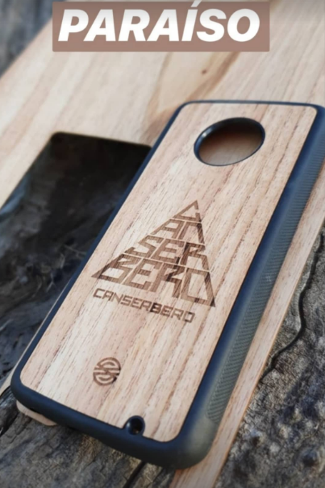
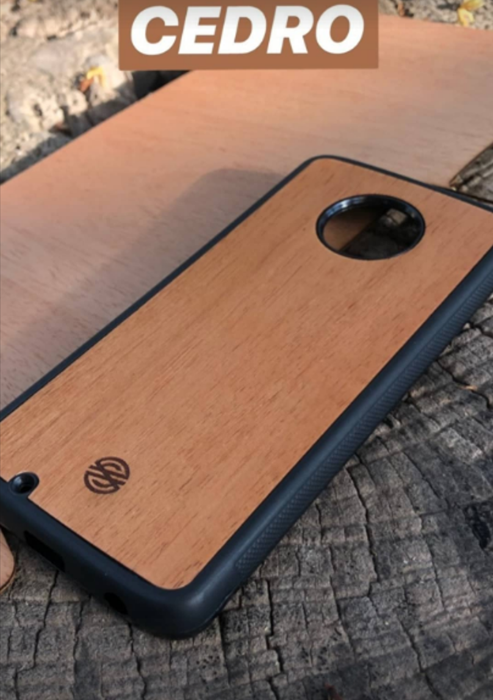
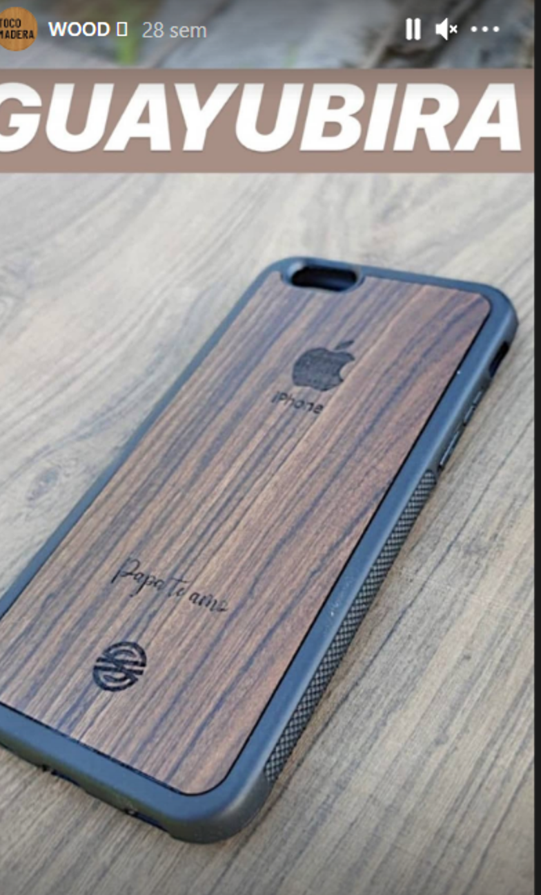
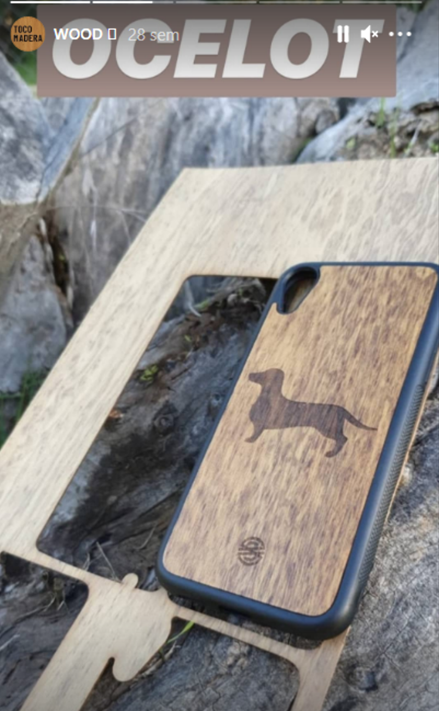
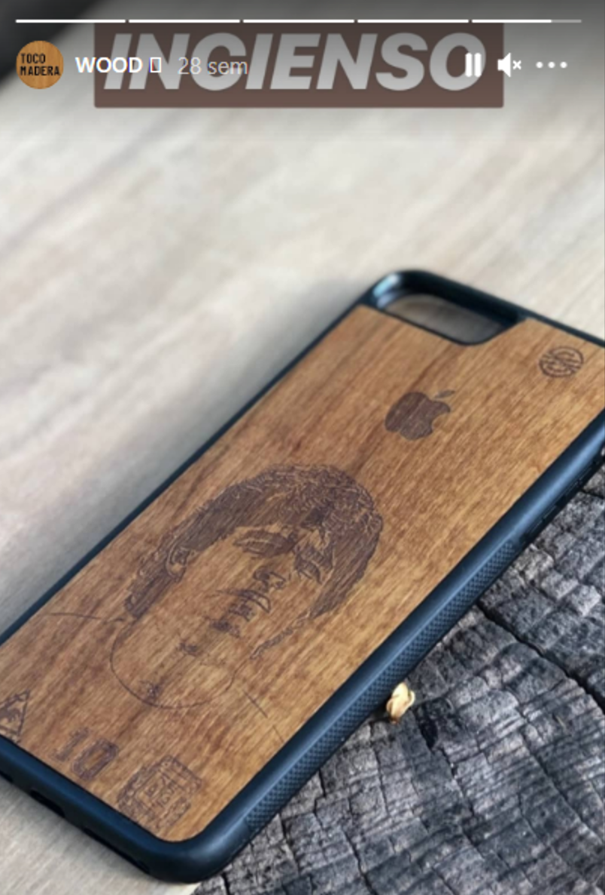

Fundas personalizadas, puede ser con 5 tipos diferentes de madera:
    Mate Iru de algarrobo, trapezoidal, laqueado y viene con bombilla de acero y packaging!
- Tipo pulsera:
- De pared:
Relojes artesanales hechos en la pampa totalmente de madera.

Reloj de pared totalmente artesanal hecho de madera en La Pampa, Argentina
Prlante simil madera marca Naxido, Modelo A60.
Amplificador ecológico de madera para potenciar el volumen de tu celular.

Muy practicos y comodos, se puede cargar el celular mientras lo usas.

Elevan 8 centimetros la compu para lograr un mayor confort a la hora de trabajar.
Pendrives de 16 GB de madera de bamboo. Personalizables en grandes cantidades.

Mousepad de madera de pino.
Organizador de escritorio hecho con madera de pino.
Cuadernos con tapa dura de madera de bamboo y con hojas de papel reciclado.
Lapcicero hecho con madera de pino.
Sistema de personalizado de los productos:
En cuanto a las fundas, nos envias la foto que queres poner y listo!!
Para los demas productos pedimos una compra minima para poder personalizarlos, porfavor consultar.
Nuestro logo: